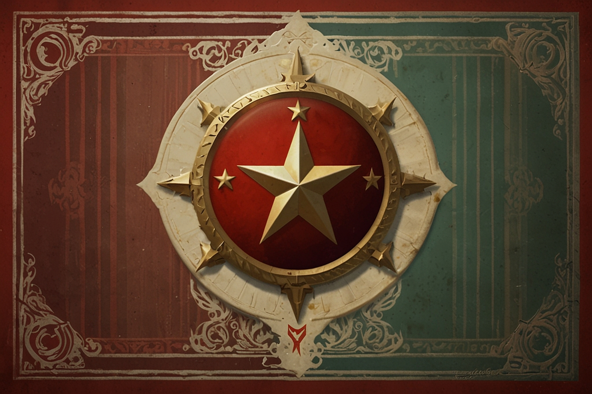
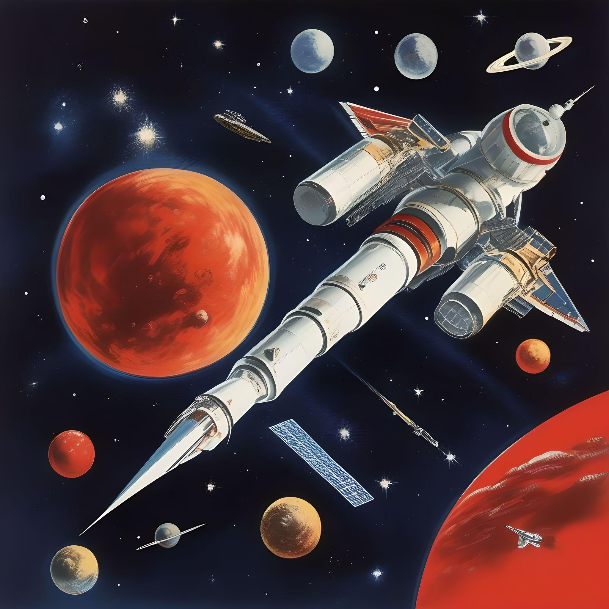
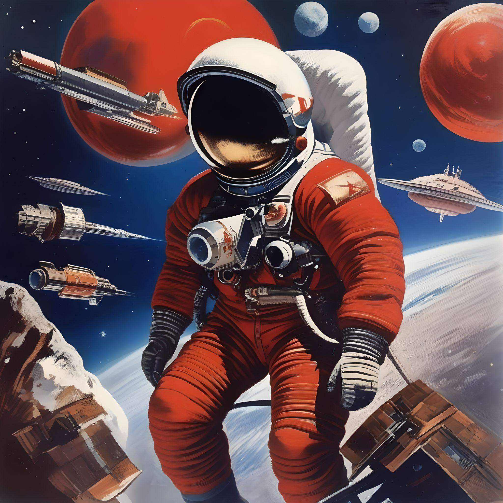
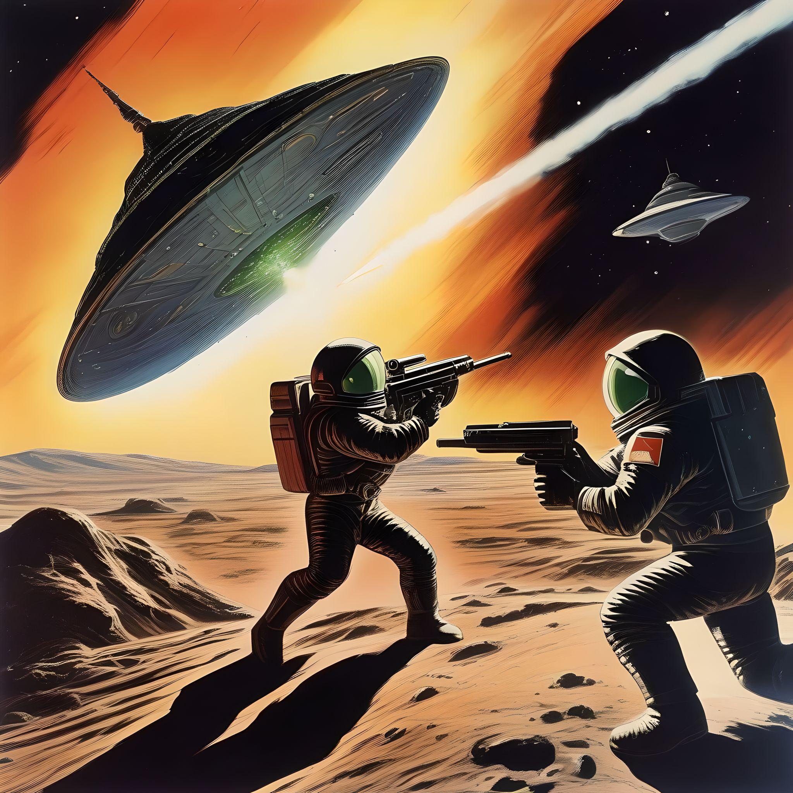

Historia:
Nombre oficial: República Popular de Novaursia
Fecha de Fundación: 2145
Lema Nacional: "Por la Unidad y la Liberación del Proletariado en el Cosmos conocido y por conocer"
Capital: San Peterdov
Idioma Oficial: Novaurés
Gobierno: Dictadura Proletaria
Líder Supremo: Comandante General Mikhail Ivanov

Novaursia fue fundada en el siglo XXII como una respuesta a la creciente necesidad de una sociedad que pudiera expandirse más allá de los confines de la Tierra. En un mundo asolado por conflictos, desigualdades y crisis ambientales, un grupo de visionarios científicos y políticos se unieron para fundar una nueva nación en el espacio exterior. La colonización de otros planetas y lunas dentro de nuestro sistema solar fue un proyecto ambicioso, pero crucial para el futuro de la humanidad. Novaursia fue concebida como una sociedad basada en los principios del socialismo, la igualdad y la cooperación internacional. Con una economía planificada y una fuerte inversión en tecnología y ciencia, Novaursia logró construir colonias autosuficientes en Marte, la Luna, y varias de las lunas de Júpiter y Saturno. Estas colonias se convirtieron en centros de innovación y desarrollo científico, atrayendo a algunos de los mejores y más brillantes científicos, ingenieros y artistas de todo el mundo.
Sistema Político:
Novaursia opera bajo una dictadura socialista, donde el gobierno controla todos los aspectos de la vida de los ciudadanos. Se suprimen las libertades individuales y cualquier forma de oposición es duramente reprimida. El Presidente, Vitaly Kuznetsov, ejerce un control absoluto sobre el país, utilizando la propaganda y el miedo para mantenerse en el poder. Las elecciones son una farsa, con resultados predeterminados y sin verdadera participación ciudadana. El partido gobernante, el Partido Socialista de Novaursia, controla todos los aspectos de la sociedad y no tolera disidencia.
Economía:
La economía de Novaursia está centralizada en manos del estado, pero controlada por una élite obrera que ha acumulado riqueza y poder a expensas de la clase trabajadora. Aunque se promueve la igualdad en teoría, en la práctica existe una gran desigualdad de riqueza y privilegio. Los ciudadanos son forzados a trabajar en condiciones deplorables en las colonias espaciales, mientras que la élite gobernante disfruta de lujos y privilegios. Cualquier intento de organización laboral es aplastado por el régimen, que ve cualquier forma de resistencia como una amenaza a su dominio.
Cultura:
La cultura en Novaursia está completamente controlada por el estado, con la propaganda siendo utilizada para glorificar al régimen y demonizar a cualquier forma de oposición. Se promueve una narrativa de heroísmo proletario y sacrificio por el bien del estado. La educación se utiliza como herramienta de adoctrinamiento, enseñando a los jóvenes a obedecer al régimen y a glorificar a la élite obrera. El arte y la música son utilizados para promover los valores del régimen y para reforzar la lealtad hacia el Comandante General.
Relaciones Internacionales:
Novaursia mantiene relaciones diplomáticas con otras naciones, pero su principal objetivo es expandir su influencia y control en el espacio exterior. Utiliza su poder militar para intimidar a otras naciones y asegurar su dominio en la región. El régimen de Novaursia no tiene escrúpulos en utilizar la fuerza para lograr sus objetivos, y ha sido acusado repetidamente de violar los derechos humanos y las normas internacionales en su búsqueda de poder y dominio.